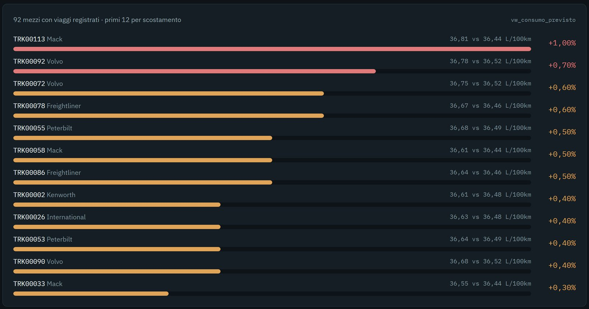
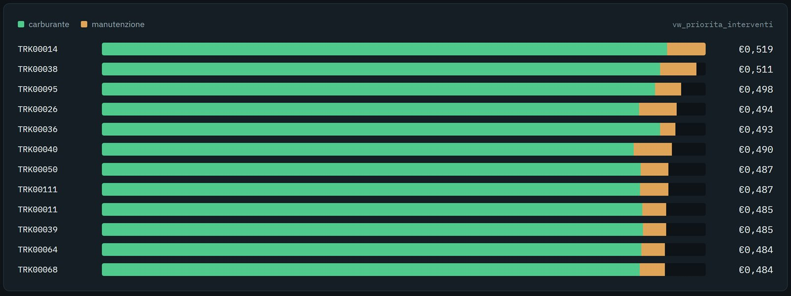

Pipeline dati
Calcolare
I dati caricati diventano indicatori con SQL: una view per ogni KPI, che Python e la dashboard leggono come una tabella qualsiasi.

In breve
- 7view
vw_*Ognuna salva una query complessa come tabella virtuale. I dati restano nelle tabelle originali. - 1query parametricaIl confronto prima e dopo un intervento cambia camion e data ogni volta: non può essere una view fissa.
- Medie ponderateConsumi, puntualità e attese pesano i chilometri e gli eventi reali, non la semplice media delle percentuali.
Dal database alla dashboard
La logica di calcolo sta in un posto solo, il database. Tutto quello che viene dopo si limita a leggerla.
- DatabaseLe tabelle caricate su Aiven.
- SQL VIEWJOIN, subquery, CTE e aggregazioni salvate con nome.
- KPIUna riga o una tabella di risultati per indicatore.
- Python e DataFrame
greenlog_kpi.pylegge ogni view con pandas. - DashboardGrafici e testi costruiti sui risultati.
Un KPI, una tecnica SQL
Ogni indicatore risponde a una domanda del committente. L'ultima colonna riporta il risultato sui dati del progetto, gennaio 2022 - dicembre 2024.
| KPI | Dove vive | Come si calcola | Risultato |
|---|---|---|---|
| 1. Consumo previsto | vw_consumo_previsto | Subquery per il consumo di ogni camion e della sua marca, poi JOIN per confrontarli. | Scostamento massimo 1,0% dalla media di marca |
| 2. Efficienza flotta | vw_efficienza_flotta | AVG() e SUM() per camion: utilizzo medio, ore di fermo, costo di manutenzione. | Utilizzo e fermo per 92 mezzi con dati mensili |
| 3. Priorità interventi | vw_priorita_interventi | LEFT JOIN su tre subquery aggregate: carburante, manutenzione e km, uniti nel costo per km. | Costo per km più alto: €0,519 (TRK00014) |
| 4. Risparmio potenziale | vw_risparmio_potenziale | CTE con WITH: consumo per mezzo, benchmark di marca, prezzo medio. Conta solo l'eccesso sul benchmark. | 86.822 litri, €82.260 e 232,7 t di CO₂ in 36 mesi |
| 5. Prima e dopo | query parametrica | CASE WHEN divide i mesi prima e dopo la data dell'intervento scelto. | Calcolato a richiesta, per camion e data |
| 6. Puntualità consegne | vw_puntualita_consegne | AVG(on_time) per la quota puntuale, AVG(detention_minutes) per l'attesa, per facility. | 55,7% in orario, 92 minuti di attesa media |
| 7. Redditività cliente | vw_redditivita_cliente | LEFT JOIN tra clienti e carichi: ricavo effettivo contro potenziale annuo. | 153 clienti su 200 sotto il potenziale |
A queste si aggiunge vw_stato_flotta, che conta i mezzi per stato: 92 in servizio, 15 in manutenzione, 13 fermi.
Perché le medie ponderate
Un viaggio di 100 km e uno di 1.000 km non possono pesare uguale. Un esempio con due viaggi dello stesso camion:
Il viaggio corto conta quanto quello lungo e gonfia il risultato.
SUM(litri) / SUM(km) × 100: 340 litri su 1.100 km. È il metodo usato nelle view.
Una view dall'inizio alla fine
Il KPI 1 per intero, com'è in greenlog_kpi.py. Accanto, quello che la dashboard ne ricava.
CREATE OR REPLACE VIEW vw_consumo_previsto AS
SELECT
t.truck_id, t.make,
tr.consumo_reale,
peer.consumo_medio_marca AS previsto,
ROUND(tr.consumo_reale - peer.consumo_medio_marca, 2) AS scostamento_assoluto,
ROUND((tr.consumo_reale - peer.consumo_medio_marca)
/ peer.consumo_medio_marca * 100, 1) AS scostamento_pct
FROM trucks t
JOIN (
-- consumo reale di ogni camion, pesato sui km
SELECT truck_id, SUM(consumo_litro) / SUM(distanza_km) * 100 AS consumo_reale
FROM trips
WHERE distanza_km > 0
GROUP BY truck_id
) tr ON tr.truck_id = t.truck_id
JOIN (
-- stesso calcolo, raggruppato per marca: il benchmark
SELECT t2.make, SUM(tr2.consumo_litro) / SUM(tr2.distanza_km) * 100 AS consumo_medio_marca
FROM trucks t2
JOIN trips tr2 ON tr2.truck_id = t2.truck_id
WHERE tr2.distanza_km > 0
GROUP BY t2.make
) peer ON peer.make = t.make
I due commenti sono aggiunti qui per la lettura; il resto è il codice del progetto.

Il KPI che non è una view
Per misurare se un intervento ha funzionato servono un camion e una data, scelti ogni volta. La funzione get_baseline_confronto li passa come parametri.
SELECT
CASE WHEN month < %s THEN 'prima' ELSE 'dopo' END AS periodo,
ROUND(AVG(average_l_100km), 2) AS consumo_medio,
ROUND(AVG(utilization_rate_pct), 1) AS utilizzo_medio,
SUM(downtime_hours) AS ore_fermo_totali
FROM truck_utilization_metrics
WHERE truck_id = %s
GROUP BY periodo
I due %s sono la data dell'intervento e il camion, passati in modo sicuro dal connettore.

vw_priorita_interventi: il costo per km diviso tra carburante e manutenzione. È da qui che si sceglie su quale mezzo intervenire, e poi con la query qui accanto se ne misura l'effetto.